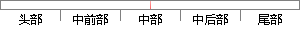

转到步骤2直至遍历结束。
片段位置图

相似结果|
相似片段 1：)；步骤2)：判断脉冲时间序列inputTime中的数据是否遍历完，如果遍历完成就意味着数据已经处理完毕，整个脉冲神经网络的数据处理过程也就结束了，即跳转到步骤20)，如果脉冲时间序列inputTime中
相似片段 2：外部)开始顺时针遍历，标记访问A的第一个顶点为起始点s。当遇到交点时，转到多边形B上开始顺时针遍历，遇到交点时，再次转到多边形A上开始遍历。重复以上过程直至起始点s，遍历结束。从点|s开始到点s结束
相似片段 3：：执行步骤8；不是根节点：跳转到步骤1。步骤8：结束。两棵结构树相比较匹配结束。No图5-4实例匹配的算法流程图下面我们将举一个例子来说明实例比较、相似度和遍历顺序的算法。假定用户给定的模糊设计需求信息
相似片段 4：Step2；否则继续遍历，直至结束；Step2．执行CS例外规则，成立则跳转到Stepl，失败跳转到Step3；Step3．执行cs规则，若i为cS节点，加入CS集合，结束遍历；否则跳转到Stepl。
相似片段 5： Y中去掉与iu 的边的权重小于等于阈值 f的节点。遍历结束，跳转到步骤 6；否则，跳转到步骤 4。步骤 6：搜索 Yui ? 中的全耦合网络。步骤 7：如果搜索到的全耦合网络的节点的类型等于 m 种
相似片段 6：（17） 当前控件处理结束。（18） 先序遍历控件树是否结束。如果结束，则跳转到步骤 19；如果没结束，则跳转到步骤 3。（19） 结束。下面给出聚类处理前和处理后的效果图，如图 3-17所示。图
相似片段 7：结束，找出适应度最优个体，解码产生保障资源配置方案即为本次仿真产生的最优方案，仿真结束；若遍历完毕但没有满足终止条件，则根据每个种群个体的适应度，对个体进行交叉变异，产生新的种群，转到步骤 ２，；若
相似片段 8：／／Step9．11实现候选属性概念集的映射Step9： 对于每一个概念的候选属性概念集Af，f=1,2，．．．，刀，重复步骤10，直至所有候选属性概念集处理完毕转到步骤12：Step10： 在概念
相似片段 9： 的一个顶点（这个点一定在多边形B外部）开始顺时针遍历，标记访问 A的第一个顶点为起始点 S。当遇到交点时，转到多边形B上开始顺时针遍历，遇到交点时，再次转到多边形 A上开始遍历。重复以上过程直至起始点 S
相似片段 10：，并记录与雅相对应的点的坐标值，如果d=-O，结束遍历，并以该点做为起始点p∞，否则，直至遍历完所有的点，以雅相对应的点为起始点p加。将点按逆时针或者顺时针的顺序重新编号，并建立新的三角边、面数据结构
|
※ 片段修改建议 ※
近似词参考：- 步骤：步调
- 结束：竣事 收场
系统自动生成语句：转到步调2直至遍历竣事。
注：本片段修改建议为系统自动生成，仅供参考。